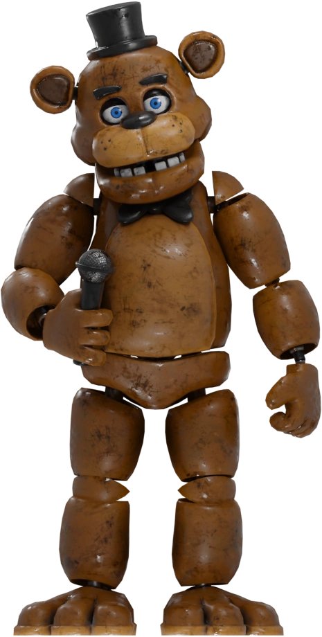
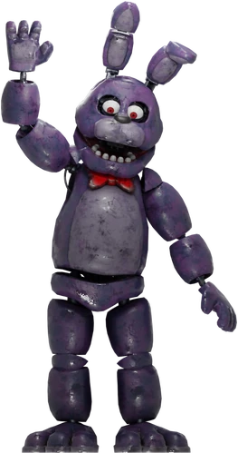
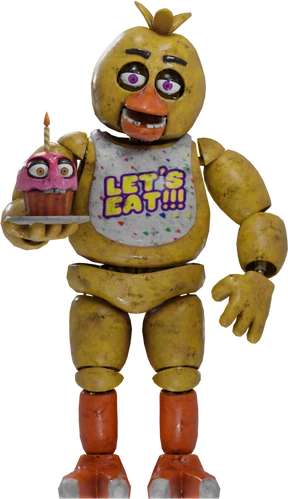
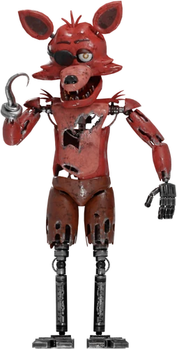

Freddy Fazbear
Freddy es un animatrónico marrón que caracteriza a un oso pardo, con un tono marrón claro tanto en el estómago como en el hocico. Según últimas visiones, Freddy, al igual que los demás animatrónicos originales, tiene la altura aproximada de un adulto medio (1,80 metros aproximadamente ). ¡Él es el líder de la banda y la cara de la compañía!
Bonnie
Bonnie es un conejo animatrónico de color índigo con ojos magenta. El color de su hocico, panza y el interior de sus orejas es un color lavanda. Siendo el uno de los principales antagonistas de la banda, ocupandose de la guitarra, se encuentra en Freddy Fazbear´s Pizza junto con Freddy, Chica y Foxy.
Chica
Chica es un pollo animatrónico de color amarillo brillante con una cabeza esférica, pico naranja, ojos rosados y cejas negras y gruesas. En la parte superior de su cabeza hay tres "mechones" de plumas. Ella tiene dos garras en cada uno de sus pies naranjas. Lleva un babero blanco que dice "LET'S EAT!!!" ("¡¡¡COMAMOS!!!")
Foxy The Pirate
Foxy es un gran zorro pirata animatrónico de color carmesí y piel andrajosa. Tiene un garfio metálico en su mano derecha, y un parche oscuro que se dobla por encima de su ojo derecho . Él es generalmente visto con ese último sobre su ojo en lugar de cubrirlo.